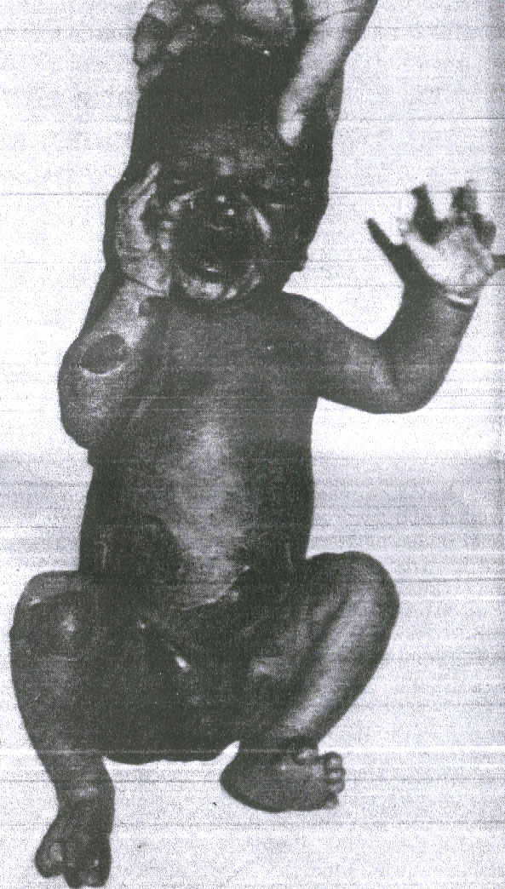
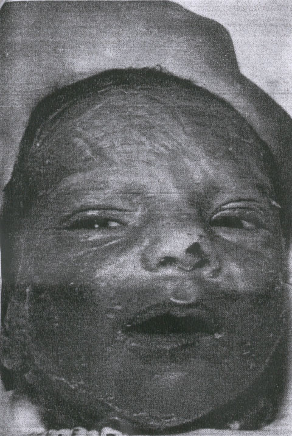
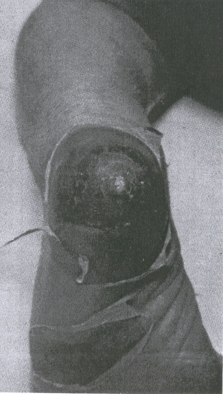

THE CIRCUMCISION REFERENCE LIBRARY
From the Department of Pediatrics, Jersey City Medical Center, Jersey City, New Jersey
ABSTRACT. A massive outbreak of the staphylococcal scalded skin syndrome due to an organism with an unusual phage pattern, occurred during a 115-day period and involved 68 newborns. Generalized exfoliative dermatitis was seen in 24 babies, and Staphylococcus aureus was isolated from 23. Fourteen isolates were phage typed, with 13 reported as the epidemic strain 29/79/80/3A/3C/54/75. Eight babies had generalized scarlatiniform eruption without exfoliation (staphylococcal scarlet fever). Cultural data were available from six, all positive for S. aureus. Four organisms were typed and reported as the epidemic strain. Of 34 infants with bullous impetigo 20 had cultures that were positive for S. aureus, and four were phage typed, revealing the epidemic strain. Illness was mild in all patients; there were no deaths and no invasive forms of staphylococcal infection. The male to female ratio of generalized exfoliative disease was 5:1. The concept of a neonatal staphylococcal scalded skin syndrome, comprised of a triad of skin disorders induced by an exotoxin elaborated by certain strains of coagulase positive S. aureus, is confirmed. Pediatrics 66:285-290, 1980; scalded skin syndrome, staphylococcal disease, toxic epidermal necrolysis, exfoliative dermatitis, impetigo
Staphylococcal scalded skin syndrome (SSSS) typically occurs as isolated cases, occasionally in small clusters, with the largest epidemic previously reported consisting of 8 patients.1 The purpose of this paper is to describe a massive outbreak of the disorders comprising the “expanded” staphylococcal scalded skin syndrome2 that involved 68 newborns due to an epidemic strain (ES) organism with an unusually phage pattern.
The year of the outbreak 6,000 newborns were delivered at Margaret Hague Maternity Hospital, Jersey City, NW. The newborn units consisted of five regular nurseries, each containing 25 bassinets: Nursery 4 South (N4S), Nursery 4 Central (N4C), Nursery 4 North (N4N), and Nursery 5 South (N5S). An isolation unit (IU) with 20 bassinets was located on the 6th floor, along with a Premature Unit.
Between March 22 and April 3, three cases of exfoliative dermatitis occurred in N4S. Penicillin-sensitive coagulase-positive Staphylococcus aureus was cultured from swabs of the nose, eyes, and skin of these babies. During the same period, two newborns were seen in clinic vesicobullous impetigo. No cases of staphylococcus infection were seen for the next 17 days, until April 20 when three newborns with erythema, exfoliation, and positive Nikolsky’s sign were admitted to the IU from the clinic. This signalled an acceleration of cases of staphylococcal skin disease from N4S, and 60 cases were seen from April 20 to June 20. The last case of exfoliative skin disease was seen on June 20, followed by three scattered cases of bullous impetigo, the last on July 14, terminating the outbreak. The epidemic encompassed a period of 115 days and involved 68 cases of three variants of the neonatal SSSS in babies 4 to 15 days old.
Beginning on May 29, intensive bacteriologic surveys were made of cultures from newborns, personnel, and the nursery environment. On June 6 N4S was closed for six weeks, scrubbed and repainted. All newborns were bathed once daily with a 3% hexachlorophene preparation (pHisoHex, Winthrop Laboratories) and a polymycin-B-bacitracitin-neomycin ointment (Neosporin ointment, Burroughs Wellcome Co) was applied to the nares, axillae, and umbilical stumps. Mothers were instructed to continue daily hexochlorophene bathing and told to report any skin rash or illness in the babies or other family members.
The 68 patients in this report all were seen with one of the disorders comprising the triad of the expanded scalded skin syndrome:2 (1) generalized exfoliative disease (Ritters), (2) generalized scarlatiniform eruption without exfoliation (staphylococcal scarlet fever), and bullous impetigo. Among the 68 babies, only five had other forms of infection due to the epidemic strain—four had purulent conjunctivitis and one had breast abscess. All five of these patients had generalized exfoliative disease. There were no cases of sepsis, pneumonia, septic arthritis, meningitis, omphalitis, cellulitis, or furunculosis.
|  Fig 1. A newborn with generalized exfoliative disease. |
The clinical features of generalized exfoliative disease (Table) corresponded closely to the description by Rittershain and others.1-30 The signs and clinical course of the disease were similar in the 26 infants, who ranged in age from 4 to 14 days. Onset was abrupt, with erythema, often first visible on the face, that involved the entire body within 24 hours. The ereythema blanched with pressure, and in many babies the skin was tender to touch. Within 24 to 48 hours the skin became wrinkled, or flat bullae containing clear fluid appeared in various locations, most commonly the face, distal extremities, and diaper area. (Fig 1). Over a period of two or three days the skin exfoliated in large sheets, exposing a red moist surface. The most denuded areas dried rapidly, soon appearing hyperkeratotic, with desquamation of large flakes for several days (Fig 2). The erythematous areas that did not exfoliate showed coarse desquamation for as long as ten days. The skin appeared normal ten to 14 days after onset. The number, size, and distribution of the areas of exfoliation varied. In nine infants exfoliation was generalized, and four of these patients were among the most toxic in the series. The face was involved in 22, the trunk in 20 and the extremities in 12 infants. Exfoliation was often distal on the extremities, involving limited, well-demarcated areas such as the heel. (Fig 3). No mucous membrane lesions were seen. Fever was not a remarkable feature; as observed in only 11 infants, fever was mostly low grade and transient, lasting 48 hours or less in seven of the infants. Two babies had elevation to 104 F (rectal), one for 24 hours and the other for 48 hours. Both of these patients experienced transient diarrhea. A single newborn had a low grade fever for six days, but showed no other signs of systemic disease. For the most part, generalized exfoliative disease was a mild, uncomplicated disorder. There were no deaths. While several of the infants appeared irritable during the periods of erythema and exfoliation, most showed no other signs of illness. Two patients developed deep, ulcerative lesions at sites of exfoliation, on on the heel (Fig 3), the other on the knee. The latter required skin grafting. Only two infants were anorectic and received intravenous fluids, both with generalized exfoliation and a prolonged course. A hospitalized baby developed tetany. Four patients had purulent conjunctivitis, but the ES organism was obtained from the conjunctival sacs of four others who did not develop clinically apparent eye infection. One breast abscess required incision and drainage. The male to female ratio of exfoliative disease was 5.5:1. Of the 26 babies, exfoliation was less than generalized in 17, commonly involving the face, or the acral areas, with exfoliation of large sheets of skin from the glove or sock areas.
|
TABLE. Clinical features in 68 Newborns with SSSS
|
||
| Manifestation | No. of Cases |
% of Total |
|
|
||
| Dequamation | 42 | 62 |
| Generalized erythema | 34 | 50 |
| Exfoliation, localized | 17 | 25 |
| Fever | 11 | 16 |
| Exfoliation, generalized | 17 | 25 |
| Conjunctivitis | 4 | 6 |
| Diarrhea, transient | 2 | 3 |
| Skin ulceraton | 2 | 3 |
| Anorexia | 2 | 3 |
| Breast Abscess | 1 | 1.5 |
| Tetany | 1 | 1.5 |
|
|
||
|  Fig 2. A 12-day-old baby with exfoliative disease of three days duration, with maximum involvement of the face. |
|  Fig 3 A 10-day-old baby with localized exfoliation of the distal extremities with ulceration of the heel. Note the rolled margins of exfoliating skin. |
Generalized scarlatiniform eruption without exfoliation was observed in eight newborns. All were afebrile and showed no signs of illness other than generalized erythema, with no lysis of the epidermis. The rash resembled streptococcal scarlet fever, including non-blanching accentuation of the erythema in the flexion creases. Pharyngitis, cervical adenitis, strawberry tongue, or palatal petechiae were not seen. Nikolsky’s sign was negative. Healing was by coarse desquamation over a period of five or ten days. The male to female ration was 1.5:1. The designation generalized scarlatiniform exfoliation seems more appropriate than scarlet fever, since the other signs of scarlet fever (most notably fever) were not present in the staphylococcal illnesses in this series.
Bullous impetigo was noted in 34 babies. The bullae were small, flaccid, and well-demarcated, and contained clear or cloudy yellow fluid. The skin between lesions appeared normal. All infants were afebrile and otherwise well, but several observers noted a faint transient erythema of the face in some patients. Recovery was rapid, the lesions resolving over three to five days, with fine desquamation noted in eight infants. The male to female ratio was 1:1.
Treatment consisted of debriding the separated skin and cleansing with a 3% hexochlorophen sudsing emulsion (pHisoHex) three times daily. After careful rinsing with tap water, the skin was dried and an antibiotic ointment (Neosporin ointment) was applied to denuded areas. Systemic antibiotics, notably penicillin and nafcillin, or penicillin and kanamycin, and later, when the nature of the illness was recognized and the organism identified as sensitive, penicillin alone, were administered for a minimum of ten days. Topical or systemic steroids were not used. A total of 41 babies were admitted, 222 of 26 with scarlatiniform eruption and 11 of 34 with bullous impetigo.
White blood cell counts, hematocrits, and urinalyses were normal, as were chest radiographs of all inpatients. Cultures were obtained from various sites in 50 of the 68 infants. Staphylococcus aureus, coagulase positive, were isolated, usually from several sites, from 23 of the 24 babies with generalized exfoliative disease cultured. But the ES organism was obtained from exfoliating skin sites in only ten of those infants. Fourteen of the coagulase-positive organisms were submitted for phage typing, and 13 were reported as 29/79/80/3A/3C/54/75, an unusual pattern not previously noted in cases of SSSS. One organism was type 53, a gourp III phage type not previously associated with SSS and probably not the causative mechanism in this case. Of the eight infants with scarlatiniform eruption without exfoliation, cultural data was available from six, all positive for S. aureus from sites other than the skin (nose, throat, eye, umbilical stump). Four of the organisms were typed and all were reported as the ES. Of the 34 patients with bullous impetigo, 20 cultures were taken and all were positive for coagulase-positive S. aureus. The organisms were obtained from the skin lesions in all. Four were typed and all revealed the ES pattern. Of the 68 patients, cultural data were available from 50, and a coagulase-positive S aureus was obtained from 48. Twenty-two of the organisms were phage typed and 21 were 29/79/80/3A/3C/54/75.
The association of phage group II staphylococci with three skin disorders in neonates and young infants, less commonly in older children, and rarely in adults,35,36 has been established. The triad of dermatologic manifestations, termed the expanded scalded skin syndrome by Melish and Glasgow,2 includes generalized exfoliative disease, generalized scarlatiniform eruption without exfoliation and bullous impetigo. A number of studies22, 37-42 have identified an extracellular protein toxic produce from group II staphylococci that induces cleavage within the granular layer of the epidermis and exfoliation of the skin of newborn mice that is indistinguishable from that seen in human patients.39
Review of the literature reveals a variety of phage patterns associated with SSSS in neonates, infants, and children, with members of group II almost always present, and phages 71, 55, 3c and 3A predominant. Of the 26 reported types, members from group I were present in six, with phages from III in seven patterns. The epidemic strain in this report was lysed by the largest group of phages, with representatives in all three groups. When antibiotic sensitivities were reported in previous series, there was a predominance of strains resistant to penicillin (10:6).
The present report confirms the concept of Melish and Glasgow2 of an expanded staphylococcal skin syndrome, and demonstrates that the three variants can occur in a large outbreak caused by one epidemic strain. Whereas bullous impetigo is a common manifestation of skin infection by a variety of staphylococcal types in neonates, Margileth’s statement that bullous impetigo “should not be included in the SSSS”29 is refuted by the evidence presented in this report that the three disorders are related clinically and etiologically.
The preponderance of males with generalized exfoliative disease (5:1) suggests that the circumcision wound may provide a site of colonization for staphylococci that would result in an increased incidence of SSSS in males.43 This is not supported by our male to female ratios of 1.3:1 and 1:1 for scarlatiniform eruption and bullous impetigo.
Steroids were not administered to any of the infants. Rudolph et al.28 reported rapid progression of generalized exfoliative disease in babies who were initially treated with steroids. While there is no evidence that steroids influence the action of the exotoxin on the skin, they may interfere with the host’s inflammatory response to the organisms, enhancing the production of toxin, and, perhaps, the invasivness of the bacteria.
Rasmussen44 reported 112 negative blood cultures from 83 patients with the staphylococcal scalded skin syndrome, and concluded that the organisms were noninvasive, proliferating on skin and mucous membranes only, and that the course of the disease was not altered by administration of antibiotics. Rudolph et al28 concluded from their series that appropriate antibiotic therapy resulted in rapid resolution of the signs and symptoms of SSSS. In the present series, blood cultures were obtained from 41 patients (22 with exfoliative disease, eight with scarlatiniform eruption, and 11 with bullous impetigo); the ES was isolated from one, the youngest infant in the outbreak, who developed exfoliative disease on day four and experienced a mild illness without fever or other signs of systemic disease. Our experience corresponds with that of Rasmussen,44 and suggests that the organisms that produce SSSS are usually noninvasive and that antibiotic therapy is probably not helpful in most cases. However, in reported cases the virulence of the organism varies, as does the ability of individual infants to localize the infection and tolerate the effects of liberated toxin. Also, administration of antibiotic will minimize hospital and community spread of the bacteria. At his stage of our knowledge, it would seem wise to treat newborns with SSSS with systemic antibacterials, based on cultural and sensitivity data. Margileth29 recommends that a penicillinase-resistant penicillin should be given to infants under 1 year of age, pending results of the bacteriologic studies.
[CIRP Note: This report was prepared in 1979 and published in 1980. It appears that the authors were not completely convinced at that time that the circumcision wound is a portal of entry for the Staphylococcus aureus pathogen in circumcised boys. Later studies have firmly established that the circumcision wound is a portal of entry for the Staphylococcus aureus pathogen. Today, one may be confident that open circumcision wound greatly increases the incidence of staphylococcus infection in newborn boys who are circumcised.]
This report confirms the concept of an expanded staphylococcal scalded skin syndrome comprised of three disorders with a common etiology, and it demonstrates that the three can occur together in a single outbreak. The factors that determine which variety of SSSS will manifest are unknown. The male to female ratio of generalized exfoliative disease was 5.5:1, while the male to female ratios of scarlatiniform eruption and bullous impetigo were 1.5:1 and 1:1 respectively. We speculate that the three variants represent differences in the severity of the disease that are largely determined by the amounts of exotoxin that are produced and absorbed, and the latter depends not only on the number, but also on the types of body sites that are colonized (intact skin, mucous membranes, wounds). Localized skin involvement results in the mildest form, bullous impetigo, whereas mucous membrane colonization produces generalized scarlatiniform eruption. The circumcision wound is a site conducive not only to rapid bacterial growth, but also to rapid absorption of exotoxin, and this could account for the strikingly higher incidence of the severest form, generalized exfoliative disease, in male newborns.
Significant features of the reported epidemic are (1) the large numbers of patients with a disease that usually occurs as isolated cases or small clusters, (2) the mildness of the disease in all patients, (3) the absence of invasive forms of the disease and scarlatiniform eruption, and (5) the high incidence of localized exfoliation.
Rasmussen and Koblenzer45 reported a dramatic increase in the incidence of SSSS. It is possible that new strains, with greater virulence, will emerge as causative organisms in future outbreaks. With our present knowledge of the clinical features of pathogenisis of SSSS, prompt recognition and effective management are possible.
We are indebted to Dr Peter Smith, Center for Disease Control, Atlanta, for the phage typing.
http://www.cirp.org/library/complications/curran1/